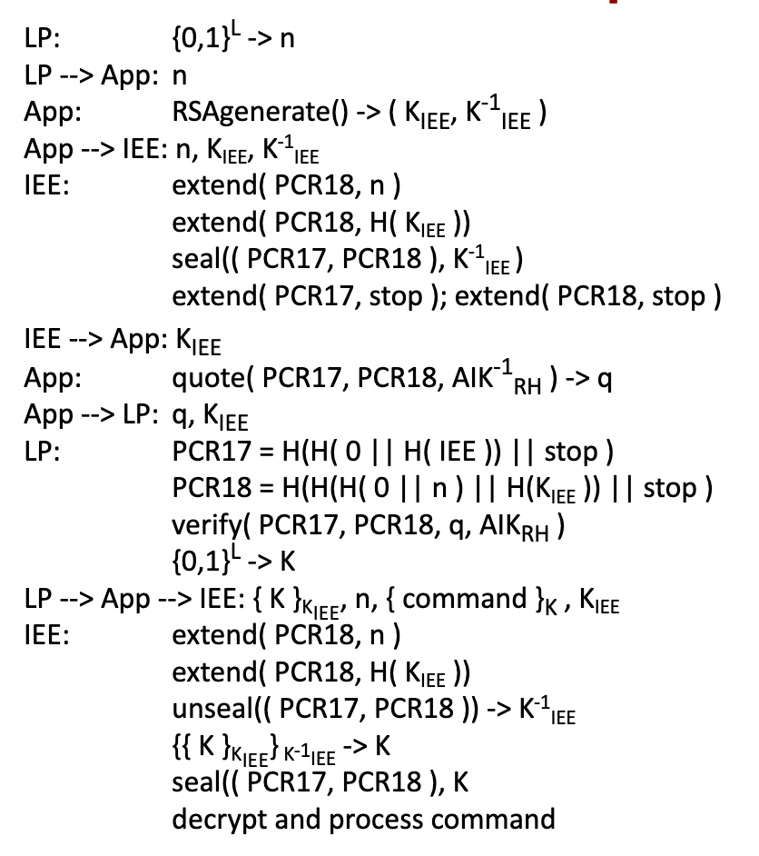
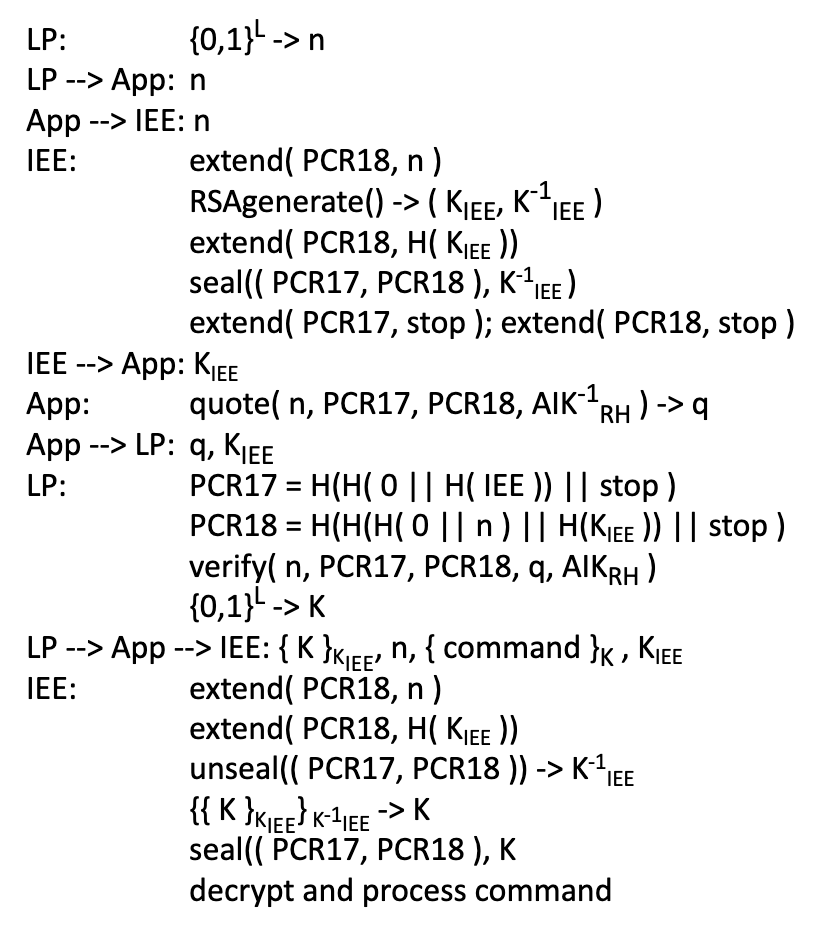

Lecture 8: Hardware-assisted security in ARM
Part 1: ARM TrustZone Architecture
SoC are a characteristic of ARM devices. The CPU is not on a separate chip but shares a chip with a 4G/5G modem, memory, Bluetooth and so on. There are two protection domains in ARM TrustZone: Normal world, and secure world. The secure monitor call allows controlled entry to the secure world. The CPU runs exclusively in one world, dependent on the NS bit, which can be read from the SCR - System Control Register.
To enable memory protection, TrustZone partitions the memory via the following mechanisms: An address space controller (TZASC) controls access to on-chip memory. A memory adapter (TZMA) controls access to off-chip memory, or main memory. Finally, there are separate translations in the MMU, and cache tags have extra bit to indicate world. To enable the trusted part of an app to communicate with its untrusted component, there are memory partitions that are accessible by both.
To enable device/peripheral access, a TZ Protection Controller (TZPC) controls access to peripherals. To prevent DoS by NW, accesses by the SW are given priority.
A different TZ architecture is present in IoT and embedded low power devices, since the SMC is expensive to perform. Instead, to transition into SW, the NW code calls the Secure Gateway (SG) instruction and the BXNS and BLXNS allow switching back and forth.
Part 2: TZ-based Security Services
The first security mechanism we consider is the Trusted Execution Environment. To use the SW as a TEE, we can either provide a fixed ``TEE service" or provide a TEE kernel plus trusted apps. The latter option increases the size of the TCB but is much more flexible and hence is the option applied in practice. As seen from this figure, the interaction between the SW and NW is mediated by the untrusted OS. The User App passes pointer to memory address where input parameters reside. The TEE kernel/Trusted OS needs to provide 5 functionalities:
- Enable easy trusted app development
- Secure storage
- Device access (fingerprint, SIM card)
- Message passing and sanitization
- Cryptographic libraries
To deploy an application into the SW the app needs to be vetted by the device manufacturer; otherwise, the trusted OS would have to enforce isolation between trusted apps.
Recall in SGX that remote attestation was built and consisted in checking CPU is legitimate and enclave code as expected. In TZ remote attestation can be implemented as follows where SK_dev is the device specific key only accessible in the SW.
Secure boot is necessary for brand protection (e.g. iPhone runs only iOS), ensuring only the intended OS accesses security relevant features such as radio settings, andpermission based OS-level access control for 3rd party apps. The process follows:
-
Boot in SW supervisor mode
- Code that executes first needs to be integrity-protected, eg. stored in the on-chip ROM)
- Verify boot-loader
- Pass control to NW and boot loader
Lecture 9: Designing Secure Systems based on Trustworthy Computing and Attestation
Core question: how can we achieve integrity assurance for code execution on remote platforms if part of the system is untrusted? To validate the local system we can not rely on the local system to show us that the system is working OK, since the local system can be corrupted and display no issues upon verification. We therefore depend on a trusted external verifier. We assume the local hardware is correct, i.e. the hardware is the root of trust. We assume a remote adversary (launches network-based attacks).
Hardware-based backdoors like the type introduced here are hard to defend against and require the use of specialized X-ray devices to compare, at the gate level, a normal chip versus a suspected chip.
There are currently 3 approaches to achieve trustworthy execution (evaluated metric is size of TCB-trusted computing base):
- Program code in ROM
- Secure boot
- Virtual-machine-based isolation
Program code in ROM
This approach consists of keeping entire program in ROM.
Advantages: simplicity and that the adversary cannot inject any additional software.
Disadvantages: software
cannot be updated without exchanging the ROM, adversary can use control-flow-attack (ROP), and the entire system is in TCB (no isolation). Verdict: impractical since code needs to be updated.
Secure or verified boot
The bootloader, which is in read only memory, loads other pieces of software and verifies digital signatures on each piece of software.
Advantages: only approved software can be loaded.
Disadvantages: Large OS almost certainly has vulnerability thus isolation amongst components not guaranteed \(\rightarrow \) entire system in TCB. The bootloader only verifies at
launch time however at runtime a ROP attack may be going on.
Note that signed code is not enough since the signing key may be compromised and an attacker thus signing his malicious software with a trusted signing key. Further, rollback attacks to previous signed software which was found to be vulnerable need to be prevented \(\rightarrow\) append-only hash chain in NV-RAM.
Virtual-machine-based isolation
Consists of isolating applications by executing them inside different virtual machines.
Advantages: VMM (VM monitor) smaller than OS and assumed to be secure, smaller TCB, isolation between applications.
Disadvantages: VMM usually still large and part of TCB, relatively complex for the average user, and complicates interaction between applications.
A verifier can be thought of as a reference to a "golden" database of expected software. A verifier sends a nonce to a system it wants to verify and receives from the system Sig(nonce, code).
Given that systems need to be compatible with legacy vulnerable software the only approach is to achieve security for small subset of the system. The approach has 3 steps:
- Establish isolated execution environment (EE) through hardware
- Externally validate correctness of EE via remote attestation
- Enable secure local execution and fetching of secret data through sealed storage
The Trusted Computing Group (TCG) proposed a Trusted Platform Module (TPM) chip which is a low-cost passive device that provides platform identity, remote attestation (via PCRs + AIK-attestation identity key to sign PCR), sealed storage (via SRK-storage root key), and a secure counter. To simplify matters, we assume there is only a public-private key pair per TPM that is being used for all the operations. The TPM will store measurements (hashes) of code that has executed. These hashes represent platform configuration. The question is how to securely store potentially infinitely long list of hashes \(H_1, ..., H_n\) in finite list of registers? The solution is that the untrusted OS stores the actual list of hashes \(H_1, ..., H_n\) and PCR inside TPM ensures integrity of list by the following operations: at time 0, \(\text{PCR}_{T0} \leftarrow 0; \) then at time T1, \( \text{PCR}_{T1} \leftarrow \) \( H(\text{PCR}_{T0} || H1) \) and so forth. Note that PCR10 is usually used since it is non-resetable to 0 except by reboot.
TPM is neither tamper-responsive nor tamper-proof and the private key can be read using scanning electron microscope. A famous attack on TPM is TPM-Fail where there is secret-dependent execution time during signature generation.
Attested Boot - TCG 1.1-Style Attestation
Attested boot works in a chain-like fashion by having a static root of trust measure a bootloader and then executes the bootloader. Then, the bootloader measures the OS kernel, the OS kernel runs. The OS kernel measures the apps and then runs them, and so forth. Only measured content can be executed. Attested boot defines Integrity Measurement Architecture, represented as, The verifier checks that all the hashes are in its database of trusted application hashes, and makes sure the PCR contains the correct value corresponding to the list of these hash values.
Shortcomings of Attested Boot
- Programs only measured at launch time, not run time \(\rightarrow\) cannot detect dynamic attacks (e.g. memory reset attack)
- TCB includes the entire system since there is no isolation between programs
- There is no guarantee of execution
Lecture 10: Dynamic Root of Trust - TCG 1.2-Style Attestation
To achieve runtime assurance isolated execution environments (IEE) need to be created. We look at the following questions:
- How to create IEE
- How to remotely verify/attest IEE
- How to establish a secure channel into IEE
- How to externally verify that output O is from S's computation on input I within IEE
To create the IEE, a special atomic instruction (SKINIT on AMD and SENTER on Intel) is issued which does the following: resets the CPU state, resets dynamic PCRs, enables DMA protection for entire secure loader block (SLB), sends SLB contents to TPM, begins execution at SLB's entry point.
To remotely verify or attest the IEE, a verifier sends a nonce to the TPM. The TPM receives the nonce and sends back a signed packet consisting of the hash of the SLB and the nonce. But how can the verifier know that the signing was genuinely done by the TPM and not the OS? The answer is that the public signing key of the TPM is signed by the TPM's manufacturer (IBM for example).
To establish a secure channel, the same procedure as remote verification is done except this time the TPM generates a kay pair and sends the public key inside the signed packet that contains the nonce and SLB hash. The verifier then encrypts a secret symmetric key and sends this encrypted packet back to the TPM.
To externally verify that output O is from S's computation on input I within IEE, the TPM provides a hash of the input and of the output and sends back the signed packet to the verifier.
Late launch, or DRTM, thus provides verifiable untampered code execution. The advantage of this approach is that it is no longer necessary to trust the OS. Only the application in question and the hardware need to be trusted. The drawbacks however is that memory is not encrypted (local physical attack vulnerable), no threads are allowed to execute except the thread that called SENTER/SKINIT, and there is no virtualization possible since otherwise a hypervisor (which manages the OS) would be able to see and control the operations done by the isolated execution environment.
The Flicker System
The Flicker System is an implementation of a DRTM where the TCB is the hardware and a security-sensitive piece of code called S and a small piece of code called Shim.
- The app, which wants to execute S, invokes a module in the OS
- The module then saves the execution state of the whole system and then calls the SKINIT operation so the OS stops running
- The CPU then resets the dynamic PCRs in the TPM and starts executing the Shim which sets up an execution environment for S
- When S is done computing, the Shim recreates the execution state of the entire system, passes control back to the OS, and returns the result computed by S to the app
A local application can not obtain any assurance for a locally executed piece of code. Why? Since in the case of a malicious OS, the OS can analyze the code of the local verifier and simply move the instruction pointer to the point in the code of the local verifier that shows success.
For the case of external verifier however, the verification is: where the blue flicker layer is the Shim layer.
Malware cannot simulate SKINIT/SENTER instructions by extending desirable H(code) into a dynamic PCR because dynamic PCRs have an initial value of -1, that can only be set to 0 via SKINIT/SENTER.
We now take a look at secure channel establishment protocols. First (flawed) protocol:

LP is the local party and RH is the remote host where untrusted App and OS is running. Even though not explicit, PCR17 gets extended with the hash of the IEE before IEE starts executing. Quoting is the attestation process. The flaw is that the untrusted App already has the private key of the IEE.
The corrected protocol is
RH generates RSA key

The next protocol is flawed:
The flaw is that there is no guarantee that the IEE actually generated K and not the OS. The fix is to extend IEE's secret key into PCR18 so if the OS chooses its own K the verifier will get a different PCR18:
LP generates RSA key
The final protocol is based on Diffie-Hellman. The flawed variant is given first:
The problem is that there is a circular dependency on the key K. We need K to unseal but we also need to unseal K. The corrected protocol is
Diffie-Hellman
The problem with attestations is that a TPM vouches for a software state, but not which TPM. Thus, if an adversary controls the TPM of the remote host then the adversary can let the remote host perform the attestation, unsign using RH's public signing key, and
then sign it using a different TPM's private signing key. The local host only knows that the remote host is using a certified TPM but not which TPM exactly.
The Cuckoo Attack

The are two solutions for this. First is to physically imprint a QR code encoding the hash of the public key of the TPM inside the device (known as seeing-is-believing), and the other solution is to reboot and trust BIOS to output public key via existing interface. However, this last
approach is not secure since malware can spoof the reboot process and output its own corrupted TPM public key.
Lecture 11: IoT Security
An example of a naive IoT protocol is that implemented by the ZigBee Light Link, where a network switch enrypts a network key using a master ZLL key and sends the encrypted key to the light bulb for further communication using the encryption network key. For example, the switch can then send \( E_{network\ key}[On\ command] \) to switch on the bulb. The problem is that anyone can desolder the processor of the bulb and extract the master key shared by all light bulbs. The attacker who has this key can then change the network key, force a light bulb to blink for 18 hours, or factory reset. The attacker need not be in proximity of the victim bulb to perform this attack since an antenna suffices to attain the desired signal strength.
ZigBee enables over-the-air updates which should be verified using asymmetric crypto, thereby having a different public key for each bulb. However, it was noticed that when the bulbs sent a request for updates from Philips servers, the servers responded with the same message (called firmware1.img on the slides) for the same update version of course. Thus, the servers signed the message with same global public key that was assigned to all bulbs. Asymmetric cyptography was clearly not used.
Since the public signing and encryption key is symmetric we can extract it by applying differential power analysis on the bulb's processor which allows uncovering the key and hence sending any update to the bulbs.
IoT devices are prone to worms since they are vulnerable, have a radio, and can be infected via radio commands. Thus, IoT devices can infect other devices. To find how many devices are needed to infect all devices in a range is given by percolation theory. Assuming all the devices are uniformly randomly distributed in an area A and that the radius of operation of each device is R then the number of initially-infected devices needed to spread to all other devices is: \[ N = 1.128 \frac{A}{\pi R^2}\] Possible attacks include hardware bricking (physically destroying the hardware), 2.4 GHz jamming (other devices can no longer communicate in this frequency band), and triggering epileptic seizures.
Myth: short range communication means no adversary can eavesdrop the communication if she is not nearby. With the appropriate antenna and amplifier, wireless signals can be eavesdropped or injected from large distances (more than a kilometer).
The IETF has tried to standardize IoT by creating a potential IoT protocol stack that is interoperable (unified for all devices) and lightweight: 
In reality however, IoT devices such as Bluetooth, ZigBee, WiFi, LoRa, all have different IoT stacks. Many IoT devices such as ZigBee use a sort of standardized stack such as

where green indicates that a feature has security options. As many small devices are low power, it is uncertain whether they will ever be able to use the full IP protocol stack, hence the need for these IoT stacks.
Encryption is not enough since for ZigBee, BLE, and WiFi the MAC address is in cleartext and events (such as switching on a IoT device) are marked by sharp rise in bitrate (B/s). For example, an attacker can infer a user's home activity from encrypted traffic by monitoring device MAC addresses as well as traffic volume:
This attack involves machine learning to derive the device state, and thus derive the user behavior.
This type of attack is caused by an existential leakage based on the time of transmission of a single message, as opposed to statistical leakage which is based on changes in the sending rate over an interval. The former can not be fully eliminated as it requires sending messages at the application's time resolution (not possible with battery-powered device), whereas the latter can be eliminated, albeit costly. Unfortunately, hiding transmission times alone does not secure information.
In VoIP (voice over IP), sound signals are compressed using variable-bit-rate codecs and compressed using length-preserving stream ciphers. As such, the length of the encrypted packet leaks information about the phonemes. An illustration of the process is shown note that phoneme segmenation is achieved by ML at 94% accuracy and phoneme classification is at 45% accuracy. Recovered sentences are then METEOR-scored.
Another data leakage despite encryption is auto-suggest which leaks character pressed, based on the size of the returned matches. To mitigate this, a website must make sure all auto-suggest packets are of the same length and that there is no detectable timing difference for characters that return long number of matches versus short number of matches.
GIFs, which use run-length compression, are prone to side channels. For example, an investment website which displays the percentage of investment funds by value on a pie chart GIF leaks information
about the percentages of the funds since the angles are leaked. Changes in angle are mapped to changes in stock prices, and the exact companies being invested in are thus found. Run-length compression is done on a line-by-line basis.

Case study: Device Pairing
Pairing: the process of establishing a security association between two devices that share no prior knowledge. Secure device pairing requires the pairing process to be resilient against a MITM attack.
There are two types of secure pairing: the first relies on a secondary channel called OOB (out of band) channel, and the other does not use OOB. The OOB channel has limited bandwidth capacity.
Two types of OOB channels
- Human perceivable: Visible Light Communication, visual, infrared Data Association, audio, haptic, and sensing
- Physically-constrained: WiFi, Bluetooth (both not recommended due to amplification of signal with antennas and amplifiers), near-field communication (NFC), ultrasound
An example of haptic OOB channel is placing two phones in one's hand and shaking them. The accelerometer of the two phones show the same readings and these readings are used to make a shared DH key.